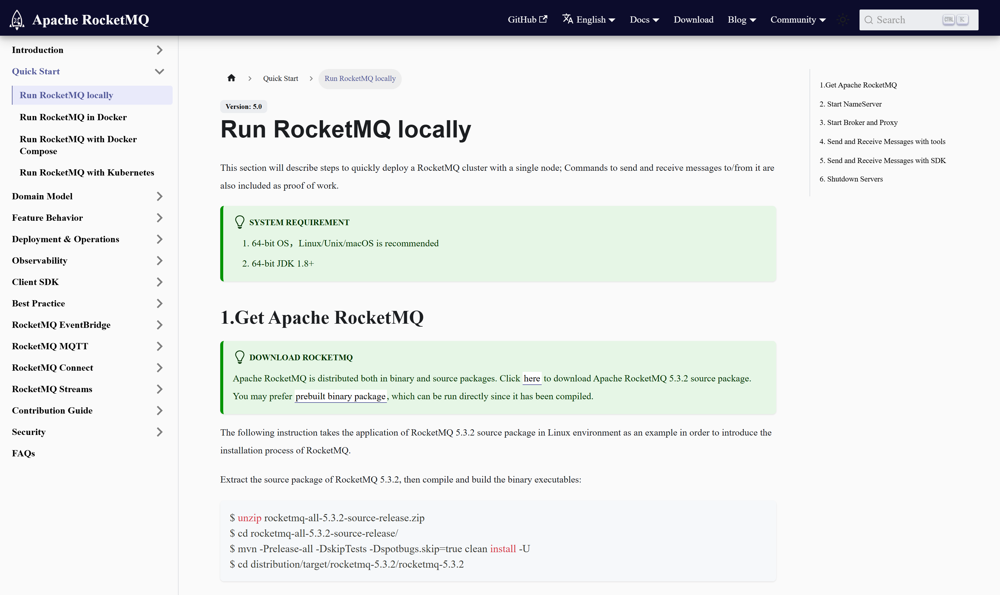
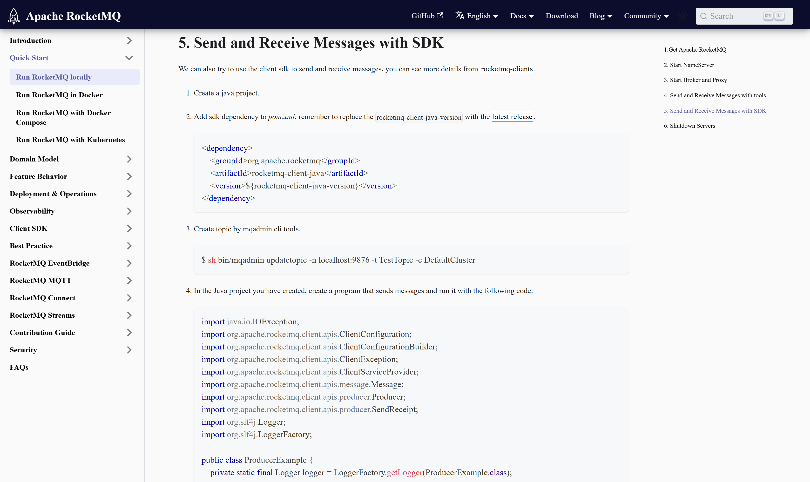
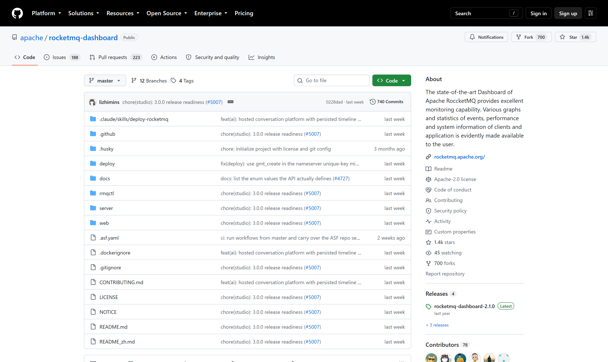

OSS PROJECT INTRO · APACHE ROCKETMQ 系列第 2 期：5 分钟跑起来
上一期我们认识了 RocketMQ 的出身与三强格局，这期继续——亲手把最小集群跑起来。路线严格照官方 Quickstart：先起 NameServer 路由中心，再起 Broker 存储节点，两条命令就是一个可用的最小集群；顺手解开新手第一个坑——发行包脚本默认给 Broker 配 8 GB 堆，实验机必须先改小；然后用命令行工具一发一收，再用官方 5.x Java 客户端从 Proxy 端口发出第一条约定的消息；最后收下 mqadmin 排查五连命令与 Dashboard 管理台。本期结束，你本机就有一套"敢拿来联调"的 RocketMQ，并且知道每一处报错该看哪、改哪。
消息队列是"看概念全懂、一动手全懵"的重灾区。第 1 期的心智模型——NameServer 只管路由、Broker 顺序写统一日志、消费者组横向扩容——每一个字都要落到一次亲手操作上才算真正拥有：起一次 NameServer，你才知道"路由中心"就是一个独立进程加一个日志文件；发一条消息，你才知道生产者要先问路由再投递的两步实际长什么样；连一次客户端，你才知道 9876 与 8081 两个端口的分野。
本期的所有命令逐字对照官方 Quickstart 文档（Version 5.0 文档线，基于 v5.5.1 发行包实测口径），实验环境为 64 位 Linux/macOS 加 64 位 JDK 1.8+——这是官方系统要求的两行原文。Windows 用户建议 WSL2，坑最少。
官方分发包有两种：源码包要自己 Maven 编译，预编译二进制包解压即用。学习阶段直接拿二进制包——从官网 Download 页或 GitHub Releases 下载 rocketmq-all-5.5.1 的 binary 发布物，解压后的目录骨架三件事值得先认识：
来源注记——官方 Quickstart《Run RocketMQ locally》系统要求：64-bit OS（Linux/Unix/macOS 推荐）与 64-bit JDK 1.8+（2026-09-30 核对）。

第一步，起 NameServer——路由中心，轻到几乎没有存在感：
nohup sh bin/mqnamesrv &
# 看启动日志确认成功
tail -f ~/logs/rocketmqlogs/namesrv.log
# 关键行：The Name Server boot success...第二步，起 Broker，顺手带上 5.x 的 Proxy 接入层（--enable-proxy 会把 Proxy 与 Broker 拉进同一进程，即官方文档说的 Local 模式）：
nohup sh bin/mqbroker -n localhost:9876 --enable-proxy &
tail -f ~/logs/rocketmqlogs/proxy.log
# 关键行：The broker[broker-a, 192.169.1.2:10911] boot success...注意命令里的两个端口各司其职：-n localhost:9876 是告诉 Broker"去 9876 找路由中心"；而 Proxy 起来后，5.x 新客户端的接入点是 8081。第 06 节发消息时你会亲眼看到这两个端口分别被谁用。
来源注记——启动与确认命令逐字对照官方 Quickstart（rocketmq.apache.org/docs/quickStart/01quickstart，2026-09-30 核对）。
不少人在这一步看到 Cannot allocate memory 直接劝退——不是安装错了，是发行包的启动脚本默认按生产机规格配内存。以 v5.5.1 源码为准：bin 目录下 runbroker.sh 默认 -Xms8g -Xmx8g、堆外直接内存上限 15g，runserver.sh 默认 -Xms4g -Xmx4g -Xmn2g。实验机内存小，编辑这两个脚本把数值改小即可（如 broker 改 1g、namesrv 改 512m）：
# distribution/bin/runbroker.sh（v5.5.1 第 102 行附近）
JAVA_OPT="${JAVA_OPT} -server -Xms8g -Xmx8g"
# distribution/bin/runserver.sh（第 88 行附近）
JAVA_OPT="${JAVA_OPT} -server -Xms4g -Xmx4g -Xmn2g ..." # 实验机改小为什么 Broker 敢默认吃这么大？因为 RocketMQ 的读写大量走堆外内存与内存映射，Java 堆反而不是大头，堆外才是重头——这个设计的深意第 5 期读源码时你会亲手摸到。现在只需记住结论：改小的是启动脚本的两个数字，生产机则要按磁盘与堆外容量规划，别照抄默认值。
来源注记——内存默认值核对自 apache/rocketmq 仓库 v5.5.1 标签源码 distribution/bin/runbroker.sh 与 runserver.sh（2026-09-30 核对）。
发行包自带一条最短验证链：设置路由地址环境变量，跑官方示例生产者与消费者。它走的是经典 Remoting 协议，直接连 Broker，不需要建 Topic——示例程序会用默认集群自动建：
export NAMESRV_ADDR=localhost:9876
sh bin/tools.sh org.apache.rocketmq.example.quickstart.Producer
# SendResult [sendStatus=SEND_OK, msgId=...]
sh bin/tools.sh org.apache.rocketmq.example.quickstart.Consumer
# ConsumeMessageThread_%d Receive New Messages: [MessageExt...]看到 SEND_OK 与消费线程陆续收到消息，存储、索引、消费整条链路就已打通。玩完收工，官方给的关停顺序是先 Broker 后 NameServer：
sh bin/mqshutdown broker
sh bin/mqshutdown namesrv来源注记——tools.sh 示例与 mqshutdown 命令逐字对照官方 Quickstart（2026-09-30 核对）。

业务开发走 5.x 新客户端：Maven 坐标 org.apache.rocketmq:rocketmq-client-java（版本取官方仓库 rocketmq-clients 的 Latest release），接入点是 Proxy 的 8081。官方示例的核心五步：
// 官方 ProducerExample 骨架（照 quickstart 原文精简）
ClientServiceProvider provider = ClientServiceProvider.loadService();
ClientConfiguration config = ClientConfiguration.newBuilder()
.setEndpoints("localhost:8081").build(); // Proxy 的 gRPC 端口
Producer producer = provider.newProducerBuilder()
.setClientConfiguration(config).setTopics("TestTopic").build();
Message msg = provider.newMessageBuilder()
.setTopic("TestTopic").setBody("hello".getBytes()).build();
SendReceipt r = producer.send(msg); // 同步发送
System.out.println(r.getMessageId());三个容易踩的点：新客户端必须预先声明要发的 Topic（setTopics），发未声明的 Topic 直接拒绝；Topic 要先存在，官方用 mqadmin 创建（下一节）；消费端对应 PushConsumerExample，构建器设置消费者组、订阅关系与消息监听器，返回 ConsumeResult.SUCCESS 即确认成功。官方文档同一节还有 SimpleConsumer 的按需拉取写法，第 3 期讲消费者类型时对比。
mqadmin 是运维与排错的瑞士军刀，学习期最常用的五条（子命令名以 v5.5.1 源码 tools 模块为准）：
# 建 Topic（官方 Quickstart 原文命令）
sh bin/mqadmin updatetopic -n localhost:9876 -t TestTopic -c DefaultCluster
# 查路由：Topic 的队列分布在哪些 Broker
sh bin/mqadmin topicRoute -n localhost:9876 -t TestTopic
# 查收发量与偏移：消息积压一目了然
sh bin/mqadmin topicStatus -n localhost:9876 -t TestTopic
# 集群与 Broker 健康总览
sh bin/mqadmin clusterList -n localhost:9876
# 消费进度：哪个组卡在哪个队列
sh bin/mqadmin consumerProgress -n localhost:9876 -g 组名把这五条读成一句话：updatetopic 管创建、topicRoute 管分布、topicStatus 管积压、clusterList 管健康、consumerProgress 管消费。日常排查九成的"消息没收到"，在这五条里就能定位到责任层。

命令行用顺手之前，先有一个看得见的面板：官方管理台 apache/rocketmq-dashboard，集群、Topic、消费者组、消息查询与死信重投全部图形化。官方 README 给的启动方式是仓库自带的 Docker Compose（一条 docker compose -f deploy/docker-compose.yml up -d --build），前端默认端口 6789，浏览器打开后把本机 NameServer 地址注册进去即可看到集群。学习期用它看消费进度与消息轨迹，比命令行直观得多。
来源注记——apache/rocketmq-dashboard 仓库 README 与 Releases 页（2026-09-30 核对）：启动命令、端口与 Latest 版本口径。
每题点击选项立即反馈 · 共 3 题
1. 官方 Quickstart 起最小集群，正确的顺序与姿势是？
2. 5.x 官方 Java 客户端 rocketmq-client-java 的接入点是？
3. 启动 Broker 后迟迟不见成功日志，第一个该看的位置是？
先说会发生什么。8 GB 堆加 15 GB 堆外直接内存的上限合计已远超 16 GB 物理内存——注意这是"允许的上限"而非启动即占满：JVM 只预留地址空间，配合 AlwaysPreTouch 之类的选项行为不同，堆通常开机即按 -Xms 全量摸底提交，堆外则是用到多少算多少。真正的危险在运行期：RocketMQ 写路径大量使用堆外缓冲与内存映射文件，大促式突发写入会把堆外用量顶上去，一旦逼近上限又触发系统级换页，延迟抖动与 OOM 就一起来了。改的思路分三层。第一层对齐物理内存：16 GB 实验机给堆 2 到 4 GB 足够（消息体不进 Java 堆，堆不需要大），堆外直接内存给 4 到 8 GB，给操作系统页缓存留一半以上——RocketMQ 的读写性能本质上是页缓存性能，这一半才是真正的"工作内存"。第二层看回收策略：刷盘方式、文件保留时长决定磁盘与缓存的占用节奏，默认策略是为持久化安全设计的，实验环境可放松，生产环境别动。第三层记住一个原则：这组数字不是拍脑袋，是"堆小、堆外中、页缓存大"的三段配比——理解了第 5 期要读的存储路径，这个配比你会自己推导出来。生产机要不要照抄默认的 8g？不需要，按集群的消息量级与磁盘数重新算，默认值只是"中大型生产机的起跑线"。
这题的关键藏在第 03 节那句话里：两个端口各司其职。tools.sh 示例走经典 Remoting 协议，问路由用 9876、收发直连 Broker 的 10911——它不需要 Proxy 存在；而 rocketmq-client-java 走新协议，接入点必须是 Proxy 的 8081。所以"示例全绿、业务连不上"的第一嫌疑是：Broker 没带 --enable-proxy，Proxy 根本没起，8081 上没有监听者。排查链四步走。第一步，netstat 或 ss 确认 8081 是否有监听——没有，回去看 proxy.log，大概率就是没加参数；第二步，确认客户端 endpoints 写的是 Proxy 地址（本机 localhost:8081，跨机写 Proxy 所在主机的 IP），而不是 9876；第三步，防火墙与安全组放行——云主机上这是隐形杀手；第四步，看客户端报错的具体语义，超时还是拒绝连接，前者查网络路径，后者查服务端进程。记住的架构分野是：5.x 里"经典协议直连 Broker"与"新协议经 Proxy"是两条并存的接入路径——前者是 4.x 存量生态的兼容线，后者是多语言与云原生的演进线。同一个集群，两代客户端可以同时接入，但它们的地址、端口、故障面完全不同。运维要给两条路分别做监控与告警，排错时先问"你连的是哪条路"，能把一半的扯皮消灭在第一句。
带走这五句话：
--enable-proxy 顺手带上 5.x 接入层；下期预告：第 3 期《核心概念与整体架构》——Topic 与队列模型、CommitLog 顺序写加双索引、消费者组与重平衡、重试与死信，把 5.x 架构逐层拆开。
Primary source：RocketMQ 官方 Quickstart（rocketmq.apache.org/docs）——本期命令逐字对照官方文档，内存参数核对自 v5.5.1 源码 distribution/bin 脚本（2026-09-30 核对）。